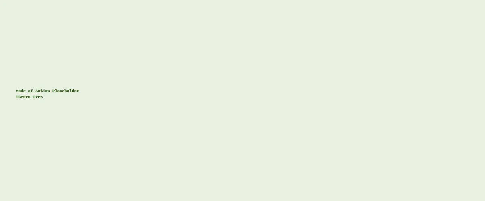

Biofertilizers
Bacillus Trio — Nutrient Cycling & Vigor
IGreen Tres combines Bacillus mycoides, B. velezensis and B. pumilus to promote nutrient cycling, root vigor and stress tolerance. It fits seed, soil and fertigation programs where robust early growth and steady performance are needed.
| Variant | Formulation | Consortium | Primary Functions |
|---|---|---|---|
| IGreen Tres — SL | Solution (SL) | B. mycoides, B. velezensis, B. pumilus | Nutrient cycling, rooting, resilience |
| IGreen Tres — WP | Wettable Powder (WP) | Same consortium | Seed/soil programs for early vigor |
| Application | Variant | Rate | Notes |
|---|---|---|---|
| Seed treatment | SL / WP | Per regional label | Uniform coat; avoid overdrying. |
| Soil/plug drench | SL | Per regional label | Target rhizosphere at transplant. |
| In‑furrow / band | WP | Per regional label | Place near seed/roots. |
Reference only. Follow locally approved labels and directions.

Supports availability in root zone.
Stronger root systems.
Helps through abiotic stress.
SL/WP for multiple placements.
Viability and purity checks.
Rhizosphere colonization → enzymatic & biochemical processes → nutrient availability, root growth and resilience.
